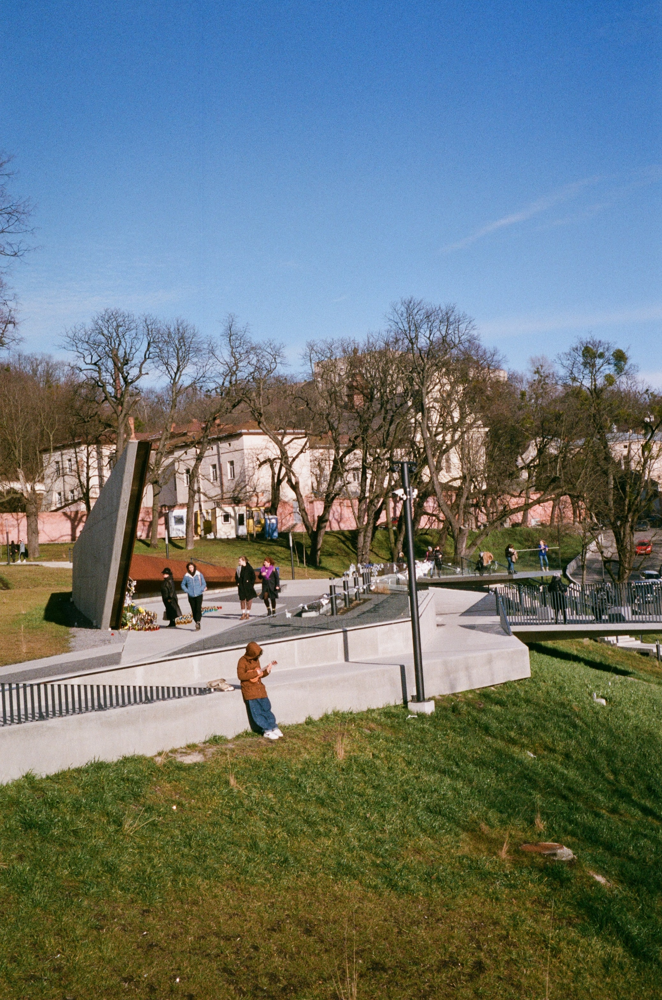

Our Global Campus
The city is home to globally renowned corporate houses in the IT sector. The college has an excellent infrastructure and accessibility from various parts of the city. The college has a well designed administrative block and various other rooms and facilities for the students such as girls common room and boys common room, waiting room, co-operative store etc.

CAMBRIDGE
BARCELONA
